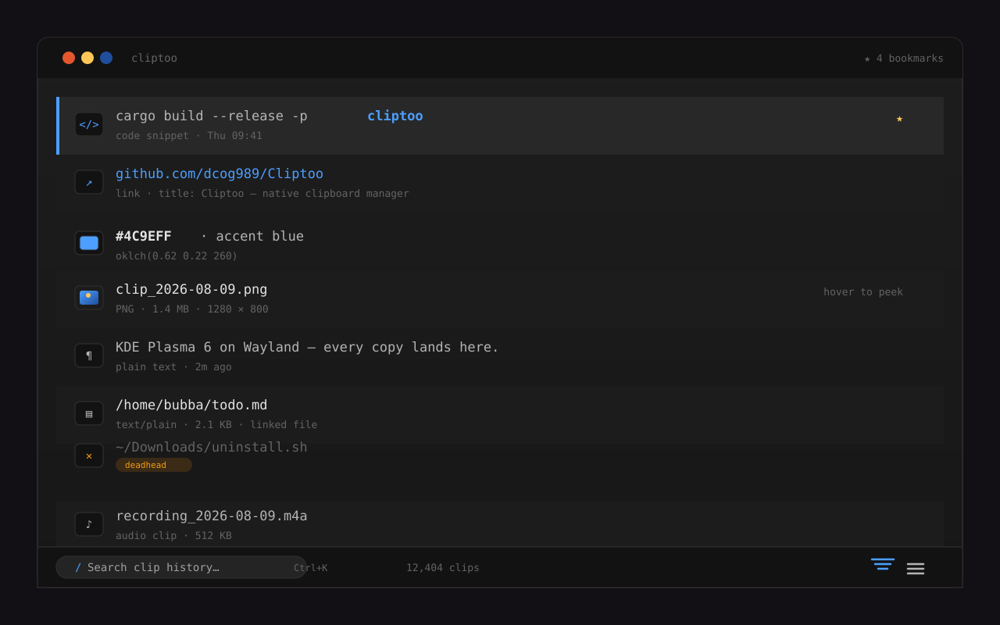
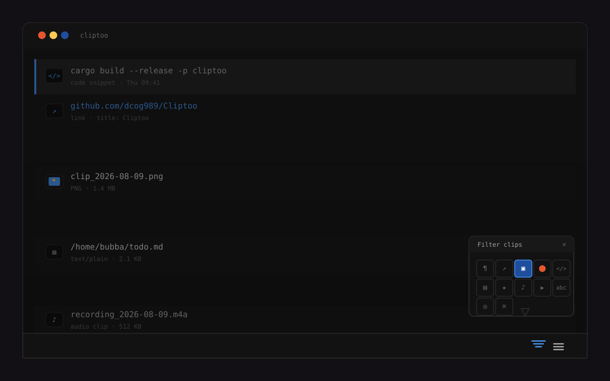
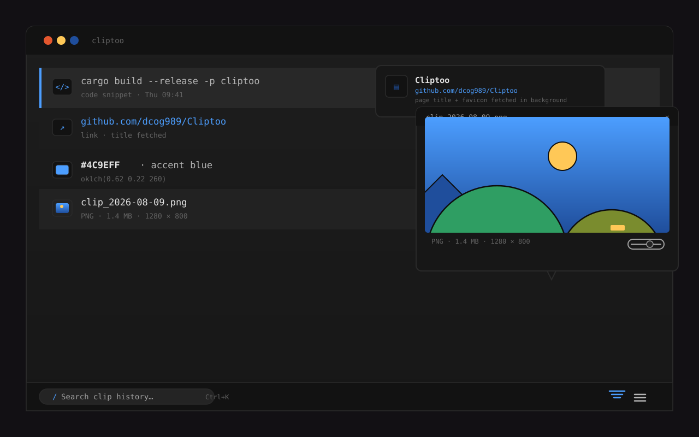
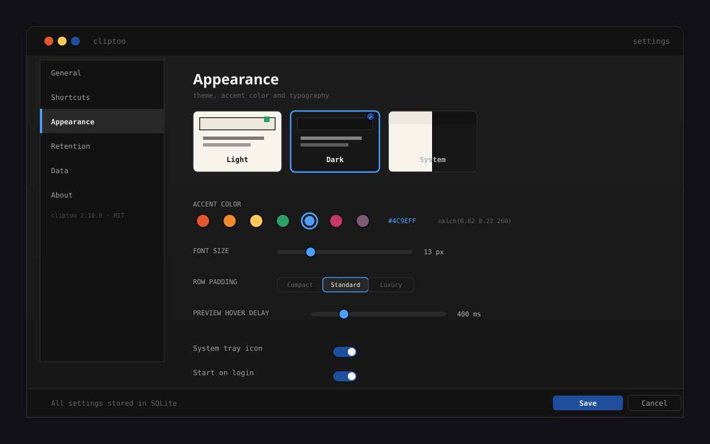

Wayland · KDE Plasma 6 · Rust
Everything you copy.
Instantly searchable
A native background clipboard manager. Cliptoo watches the clipboard and builds a searchable library of text, links, images, colors and code — no Electron, no browser engine, no cloud.
- Instant
- rooted search
- Native
- no Electron
- Private
- stays on disk

In action
See it, don't take our word



What's inside
Thoughtfully crafted
-
01
Instant search
FTS5 full-text search over thousands of clips, real-time and match-highlighted as you type.
-
02
Captures everything
Text, links, images, file URIs, color swatches and code snippets — all auto-classified on entry.
-
03
Content-aware filters
Flatten the list to just links, images, colors or bookmarks from the one-click type grid.
-
04
Quick paste overlay
Hit a number to paste the highlighted clip straight into any app via the quick-paste slots.
-
05
Global hotkeys
System-wide shortcuts through the XDG Desktop Portal GlobalShortcuts — no X11 fallback needed.
-
06
Bookmarks
Pin clips so auto-cleanup never touches them; keep a permanent library of what matters.
-
07
Image previews
Hover thumbnails for PNG, JPEG, WebP, AVIF, JXL and SVG — rendered natively, offline.
-
08
Color science
#hex,rgb(),hsl()andoklch()swatches, converted with the real OKLCH→sRGB spec. -
09
Code highlighting
A syntax-highlighted view for code snippets and file clips, powered by syntect.
-
10
URL metadata
Page titles and favicons fetched in the background for every link you copy.
-
11
Text transforms
upper,lower,camel,kebab, strip whitespace and more, right from the menu. -
12
Smart maintenance
Auto-cleanup by age or count, deadhead stale file clips, and portable JSON export/import.
Under the hood
Built with serious tools
A native Wayland-first app: Rust on top of Slint with the Qt 6 backend, SQLite for storage and full-text search, and the XDG Desktop Portal for global hotkeys.
- Rust
- Slint 1.17
- Qt 6 backend
- Wayland
- wlr-data-control
- KDE Plasma 6
- SQLite
- FTS5
- rusqlite
- Tokio
- zbus
- StatusNotifierItem
- enigo
- syntect
- resvg
- jxl-oxide
- reqwest · rustls
- XDG Desktop Portal
- OKLCH color science